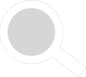
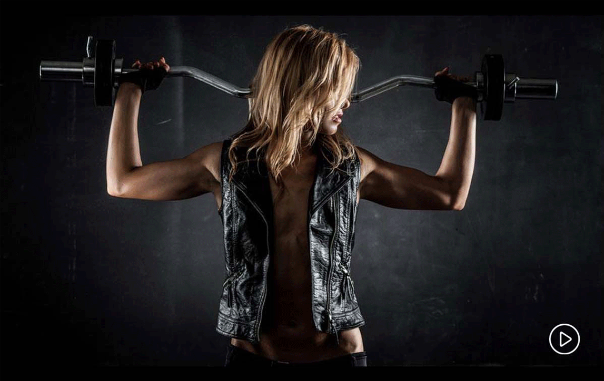

首页
减脂塑形
增肌增重
训练计划
健身食谱
新闻资讯
论坛图库
登录
注册

当前位置>训练计划>减脂教程
减脂训练计划

训练计划
办公室5分钟训练计划
坐姿斜方肌拉伸
坐姿斜方肌拉伸
坐姿三角肌拉伸
坐姿胸部拉伸
久坐不动会导致全身肌肉紧张和酸痛，用五分钟的时间拉伸下，让你的一天状态恢复满血
了解更多
宅在家训练计划
坐姿背部拉伸
椅子体前屈
椅子分腿压
坐姿肱三头肌拉伸
久坐不动会导致全身肌肉紧张和酸痛，用五分钟的时间拉伸下，让你的一天状态恢复满血
了解更多
减脂训练相关信息
肌肉拉伤血液循环不畅吃菠菜
分享增肌牛肉的使用做法
让肌肉增长的营养规律
专业健美营养食谱推荐
家的蛋白粉如何分辨
运动营养食品（营养补剂）的种类细分
运动完毕不要服用维他命
偏胖人群不适合补充增肌粉
再增肌粉的使用上存在的几个误区
高效增肌粉的用量和使用方法
一个专业运动员的营养食谱
减肥饮食的一些留言和真相
广告服务
关于我们
sitemap
联系方式
友情连接
媒体中心
sitemapxml
公司资质
加入我们
Copyright 2013 muscles.com.cn 版权所有 蜀ICP备13017676号-1